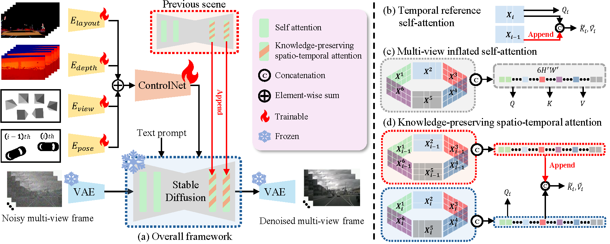
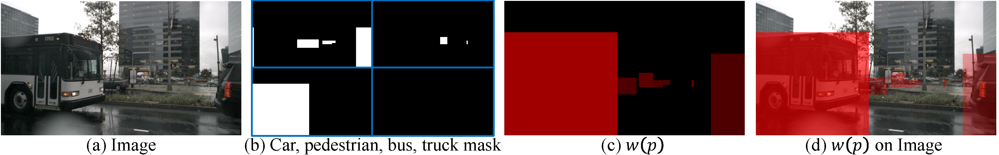

Abstract
Synthetic data for autonomous driving is surging, powered by diffusion models that promise scalable scene generation. Yet key obstacles remain, since multi-view and temporal consistency often requires backbone fine-tuning or added layers, which can erode pretrained knowledge and weaken text alignment. Models also stay close to the training distribution, struggling under adverse weather and unseen configurations, while fidelity favors frequent over rare classes. We address these gaps with FrozenDrive, a controllable generative framework that preserves pretrained diffusion knowledge while achieving strong consistency. FrozenDrive conditions on driving-stack signals and text prompts, and expands the context of frozen self-attention across views and frames to promote cross-view alignment and temporal coherence in one pass, without trainable spatio-temporal modules in the diffusion backbone. An object-focused constraint further improves fidelity for rare categories. Without weather- or scene-specific fine-tuning, FrozenDrive synthesizes globally coherent multi-view driving scenes from text and surpasses prior baselines under adverse and rare conditions. On nuScenes, FrozenDrive-augmented data improves AD model performance, especially at night and in rain, demonstrating strong robustness with scenario-targeted data.
Method Overview

Overall framework. FrozenDrive conditions a frozen pretrained diffusion backbone on structured driving signals and text. Its knowledge-preserving spatio-temporal attention jointly promotes cross-view and temporal consistency without updating the pretrained attention projections.
Object-Focused Weighting

Object-presence ratio loss. FrozenDrive assigns larger diffusion-loss weights to underrepresented object categories, improving generation fidelity for rare objects.
Key Results
Keeping the diffusion backbone completely frozen, FrozenDrive synthesizes multi-view driving scenes that stay consistent across cameras and over time. Guided purely by text, it composes adverse and previously unseen conditions — rain, night, and snow — while faithfully preserving scene layout and the appearance of rare objects, surpassing prior generators.
Downstream Impact
We train an autonomous-driving model (SparseDrive) on data augmented with FrozenDrive's text-prompted night and rain scenes. The scenario-targeted data sharply improves both perception and planning under adverse conditions — outperforming the normal-weather-only baseline and every prior generator.
| Augmentation strategy | Night | Rain | ||||
|---|---|---|---|---|---|---|
| Det. mAP ↑ | Map mAP ↑ | Plan L2 ↓ | Det. mAP ↑ | Map mAP ↑ | Plan L2 ↓ | |
| Baseline (normal only) | 6.62 | 5.99 | 1.40 | 31.60 | 24.75 | 0.75 |
| Rule-based | 7.42 | 6.50 | 1.24 | 30.76 | 25.20 | 0.76 |
| DriveArena | 8.89 | 7.00 | 1.09 | 33.46 | 29.06 | 0.71 |
| MagicDrive-V2 | 12.68 | 11.69 | 1.11 | 33.93 | 30.02 | 0.73 |
| FrozenDrive (Ours) | 18.15 | 21.03 | 0.93 | 35.15 | 31.39 | 0.58 |
Perception (3D detection & online-mapping mAP) and planning (average L2) of SparseDrive on the nuScenes night / rain splits, grouped by training-data augmentation strategy. FrozenDrive (Ours) is best in every column. Adapted from Table 2 of the paper.
BibTeX
@inproceedings{jeong2026frozendrive,
title = {FrozenDrive: Zero-Shot Text-Guided Driving Scene Generation and Data Augmentation with Parameter-Free Frozen Diffusion Model},
author = {Jeong, Yuhwan and Kim, Hyeonseong and We, Daehyun and Song, Seonkyu and Yang, Jinnyeong and Jang, Hyun-Kurl and Yoon, Youngho and Yoon, Kuk-Jin},
booktitle = {European Conference on Computer Vision (ECCV)},
year = {2026}
}